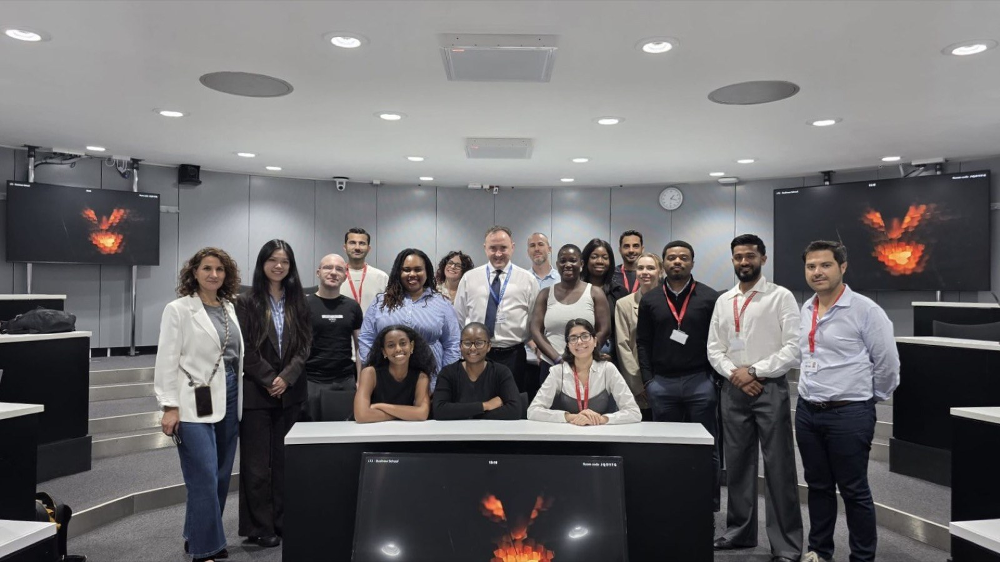
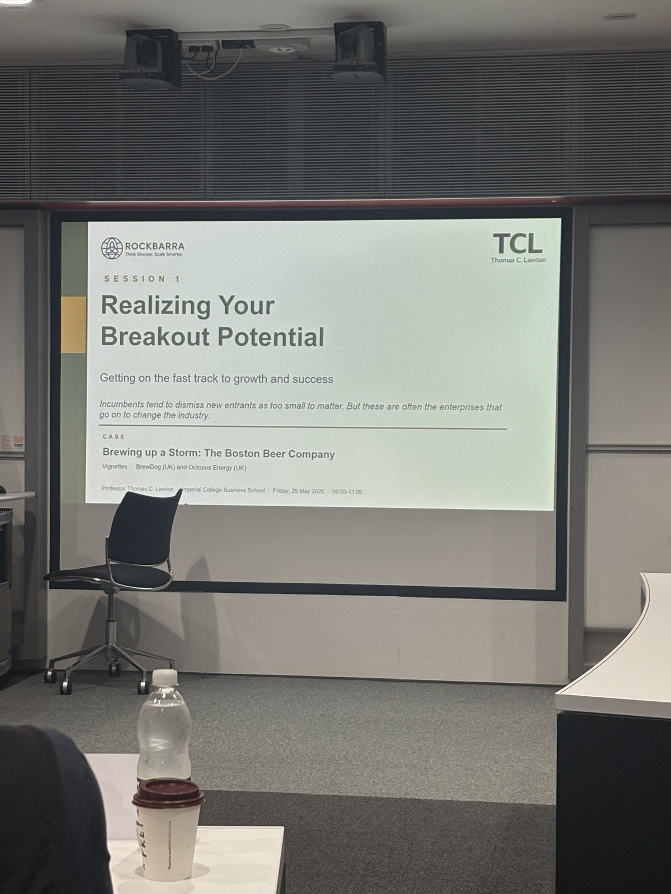
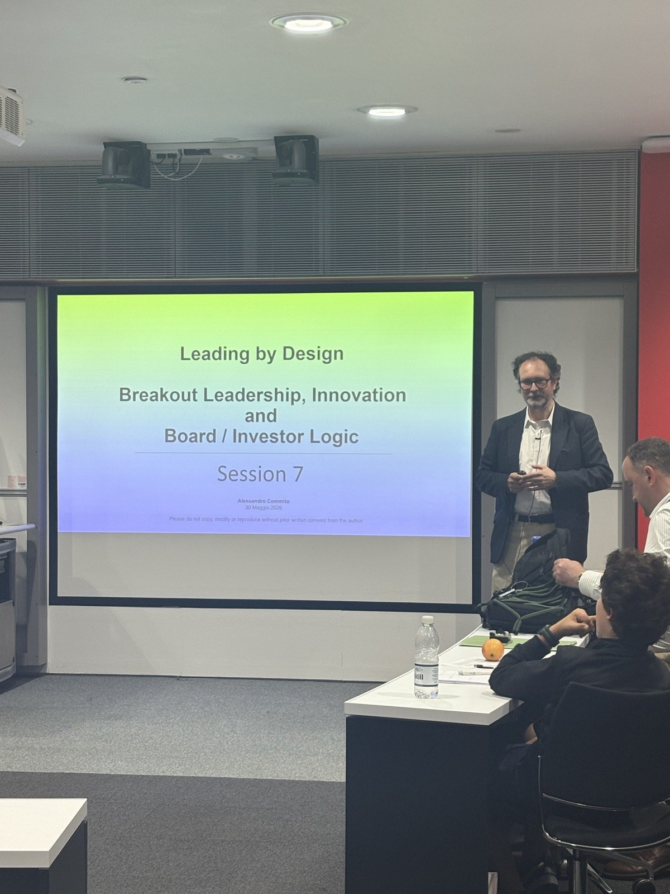
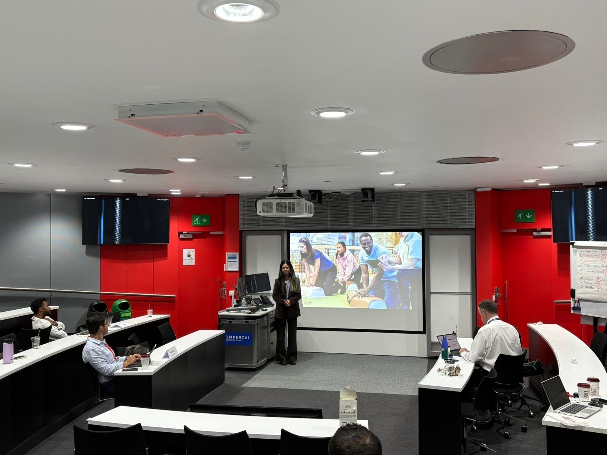
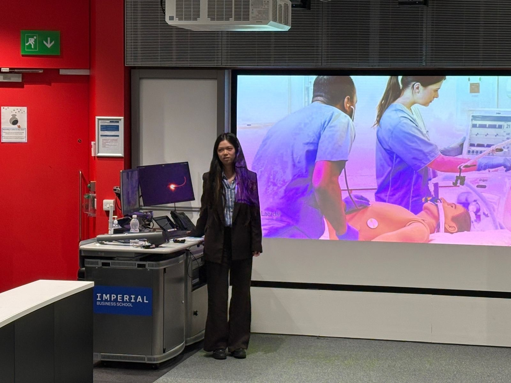
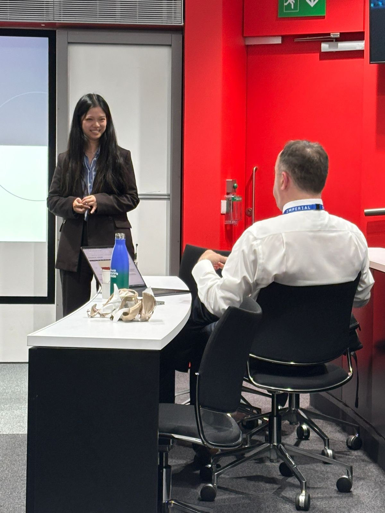
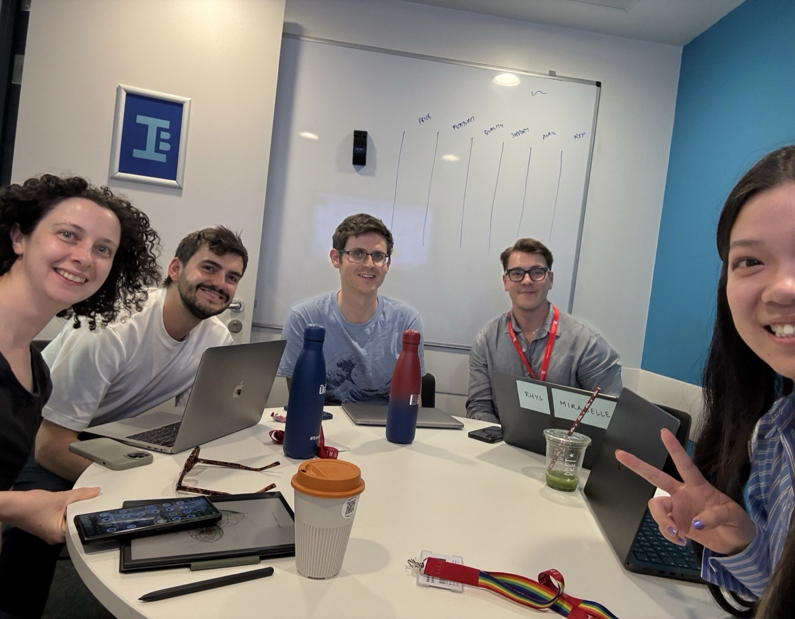
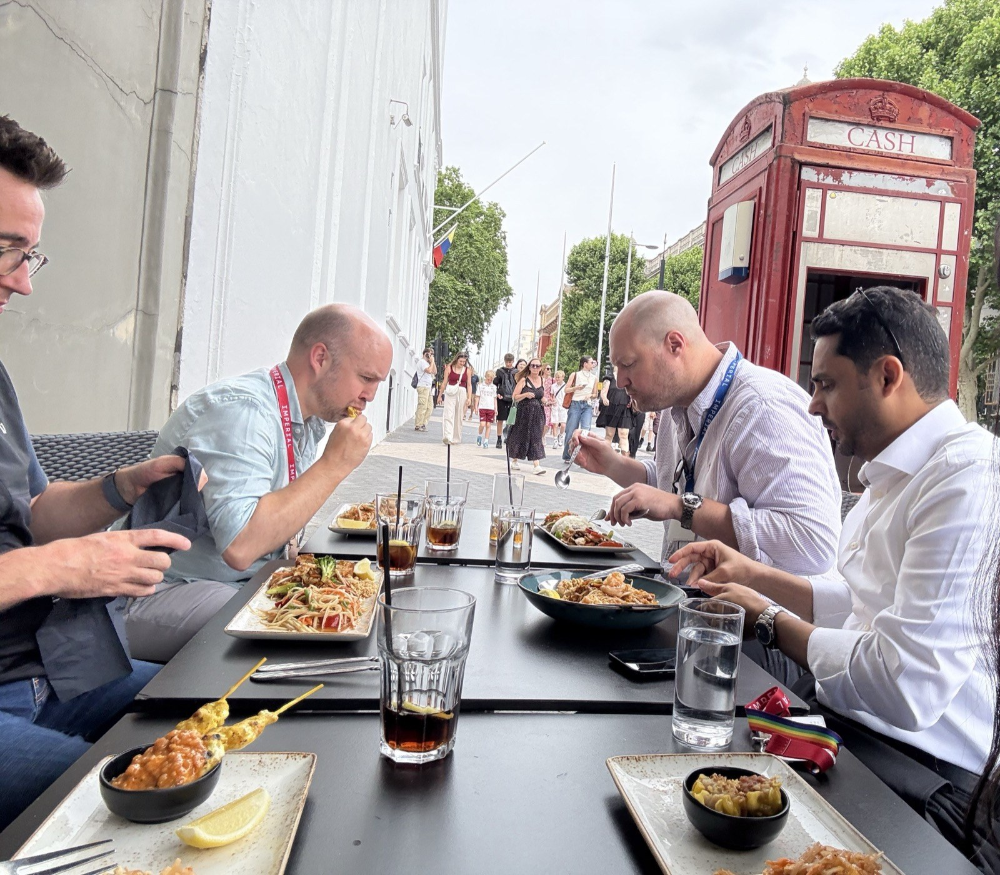

Breakout Strategy: three days learning how good companies become great ones.
For my latest MBA elective I spent three intensive days on how established companies achieve breakout, high growth.
Then I convinced my team to build a breakout strategy for my own employer, Laerdal Medical. This is what I learned,
the frameworks we used, and the strategy we pitched to a hypothetical CEO.
AuthorYuanzhen CaiProgrammeImperial College London · MBAFacultyProf. Thomas C. LawtonCase companyLaerdal MedicalFormat3-day intensive · Group H

The elective cohort with Professor Thomas Lawton, Imperial College Business School.
Strategy, until recently, was something I experienced one project at a time. As a designer at Laerdal Medical, I think
constantly about products, users, and the next release, but rarely about the company as a whole, at the altitude a CEO or
a board has to. This three-day Breakout Strategy elective at Imperial, led by Professor Thomas Lawton, was the first time
I was asked to do exactly that.
The premise is deceptively simple. Most companies grow incrementally; a rare few break out and achieve sustained,
double-digit growth. Breakout Strategy, the framework developed by Finkelstein, Harvey and Lawton, is a structured way to
diagnose why a company has stalled, choose a credible high-growth route, and pressure-test whether the strategy can survive
contact with markets, regulators, technology shifts and geopolitics.

Session 1, Realizing Breakout Potential. The course opens with how small entrants come to reshape whole industries.
Each team picks a real company and presents a recommended breakout strategy to a hypothetical CEO. When it came time to
choose, I made the case for studying Laerdal, the company I work for. I was genuinely glad the team agreed: it was a
chance to understand my own company at a level I never had before, and perhaps to surface a few suggestions that could be
useful to it. We became Group H, Laerdal Medical.
Until now my exposure to strategy had been mainly at the project level. This was the first time I had to think about the
whole company, and even learning the materials stretched how I see what we do.
Doing my homework, from the inside
Before going deep, I did something that made the whole project stronger: I reached out to Jon, a senior leader at Laerdal,
to ask for directions and the angles our team should explore, or avoid. I was conscious that I had one evening of
executive-altitude thinking against decades of his, so I wanted my analysis grounded in how the company actually sees
itself.
My team had narrowed the field to three plausible breakout directions:
Software ecosystem play: strengthen Laerdal's software ecosystem and find ways to collect and monetise the data flowing through it.
Asian market expansion: accelerate growth in Asia to unlock a larger profit pool.
Scaling the RQI model: extend the subscription and competency model into high-margin emergency-training verticals beyond healthcare.
Jon's steer was clear: the first direction was the strongest. As he put it, it's the combination of software on top of
hardware, with content and user management, that will be powerful for us; selling competence and quality improvement as an
outcome. He also shared product-strategy and execution materials that reframed how I approached the assignment. That
conversation became the spine of our proposal: a platform breakout built on the hardware leadership Laerdal already owns.
The frameworks that changed how I think
The course is cumulative; each worksheet builds on the last, moving from diagnosis to direction to delivery. These were
the five that reshaped how I see a business. Where it helps, I've made them interactive, so try them as you read.
Framework 01 · The diagnosisThe Capital Accumulation Cycle
The starting point isn't strategy, it's an honest audit of the capital a company has already accumulated, across four
forms: organisational, human, symbolic and social. A breakout happens when a company converts that
stored capital into a new growth engine. A stall happens when the conversion breaks down.
Running Laerdal through this was the moment the project clicked for me. Laerdal is extraordinarily capital-rich, but
almost all of it is locked into a hardware logic. The cycle stalls right at the point where data, software and
recurring revenue should be created. Click each form of capital below to see what we found.
◉ Interactive · Diagnostic
Laerdal's four forms of capital
Tap a card to reveal the evidence and our strength rating.
Diagnosis · Capital-rich across all four forms, but in hardware only. The cycle has stalled at the conversion
point to software, data, and recurring revenue. The breakout problem isn't a lack of resources; it's a lack of
conversion.
Framework 02 · The data layerWhere the cycle compounds, or stalls
The most powerful idea in the diagnosis is that capital is supposed to compound. Hardware sales build
relationships, which build brand, which generate data, and that data should flow back in to fund the next loop. For
Laerdal, the loop stops dead at the data layer: every CPR session, every simulation hour, every compression depth is a
data point about human readiness, and today most of it simply evaporates on individual devices.
The proposed breakout closes the loop: hardware plus software, so every device generates data; data capture
becomes a product; readiness intelligence gets sold back to customers; lock-in deepens; recurring revenue compounds.
Toggle between the two below.
↺ Interactive · Before and after
The capital loop, stalled vs. closed
Switch the view to see where the value leaks today, and how the breakout recaptures it.
Today the cycle breaks at the data layer, and value that should compound simply evaporates.
Framework 03 · The directionThe Routes to Breakout map
Once you know your capital position, the question becomes which kind of breakout. The framework lays out eight
archetypes across two axes: emergent versus established markets, and four growth postures (taking by storm, laggard to
leader, expanding horizons, shifting shape). Naming the route forces precision: you commit to a specific way of growing,
not a vague ambition.
For Laerdal we argued for a combined route: Big Improver (radically reconfiguring the core
from hardware-led to platform-led) and Early Adapter (carrying the simulation expertise into adjacent
high-risk verticals like mining, maritime and aviation). Hover or tap any cell to see what it means; the two we
chose are highlighted.
↗ Interactive · The map
Routes to Breakout
Eight archetypes. Two markets. We chose two, so explore the rest.
Emergent markets
Established markets
Taking by Storm
Laggard to Leader
Expanding Horizons
Shifting Shape
Why now? The medical-simulation market is set to double to $7.2B by 2030, and the first-aid training market reaches $5.9B by 2033. The window is roughly three years before software-native entrants close it.
Framework 04 · The offerSix pillars of the business model
Direction is nothing without delivery. The framework breaks any business model into six pillars (cost,
innovation, reliability, relationships, channels and brand) and asks how each must change to deliver the new value
proposition, on both a techno-system (what you build) and a socio-system (how people work) level.
This is where our strategy became concrete. Each pillar mapped to a specific move for Laerdal. To see whether the logic
holds together, try matching each pillar to the move we proposed.
⇄ Interactive · Connect the strategy
Match the six pillars to Laerdal's moves
Click a pillar on the left, then the move on the right you think it powers. Get all six to win.
0 / 6 connected✓ That's the whole business model, well played.
Framework 05 · The testLeadership and competitive robustness
The final lens is robustness. A breakout audit scores five leadership capabilities (positive, negative, conceptual,
creative and relational) and asks which one carries the strategy and which one constrains it. For Laerdal, the
enabling capability is relational (80 years of institutional trust), and the constraining one is
negative capability: the courage to say no to easy hardware-only revenue.
The course also insists that in modern markets, the line between market and nonmarket competition has
collapsed (Doh, Lawton, Rajwani and Paroutis, 2014). You compete on product and on regulation, geopolitics and
stakeholder alignment at once, which is how we found Laerdal's sharpest exposure: a Suzhou manufacturing base feeding a
US-heavy revenue mix, right in the path of US-China tariff escalation.
The refusal. Every real breakout has a "we will not do this anymore" moment. For Laerdal it's simple and hard: no more standalone hardware without software on top. Refusal isn't a failure of imagination, it's the cultural test of whether the strategy is real.

Guest session, Leading by Design, with practitioner Alessandro Commito on leadership and investor logic.
4 → 1
Four forms of capital, one stalled conversion point
35%
Software revenue at benchmark Surgical Science, Laerdal's gap
30%+
Target software revenue share by 2030 in our proposed vision
90
Days to prove the data loop before the window closes

Presentation day, walking the room through the recommendation for Laerdal.
The breakout we proposed
Pulling it together, our pitch to a hypothetical Laerdal CEO was this: Laerdal is a hidden champion standing at a
digital inflection point. It has spent eighty years becoming the world's most trusted lifesaving-training company,
and it has quietly accumulated the data, brand and relationships to become something larger: the global standard
for human emergency readiness, across healthcare and industry.
From aspiration to commitment
We sharpened the vision from the aspirational "help save one million more lives every year by 2030" to something
a board can be held to: "become the global standard for human emergency readiness across healthcare and industry by
2030, with 30%+ revenue from software." Specific, time-bound, measurable.
How it gets delivered
The value proposition shifts from a premium hardware brand to an accessible readiness platform: proactive dashboards and
skill-decay alerts, sector-specific simulation modules, and an insurance integration that turns readiness data
into something an underwriter will pay for. And it's sequenced with healthcare-first discipline:
90 days: prove the loop. Activate data feedback on the existing installed base; run two flagship hospital pilots; bring the board hard evidence.
Year 1: launch the platform. Readiness Platform MVP live, anchor enterprise health-system clients, open Singapore as the Asia-Pacific beachhead.
Year 3: define the category. Full platform across 6+ sectors, 30%+ software revenue, presence in 5+ Asian markets.
The risk, we were honest, is not capability, it's speed. If Laerdal can't activate the data loop fast enough, a
software-native or AI-native entrant closes the gap from the other side.

The opening of our pitch: Laerdal as a hidden champion at a digital inflection point.
The strategic pledge
Laerdal is the world's most trusted lifesaving training company that hasn't yet built the platform its data,
brand, and relationships have already earned.
What I took away

Presentation day, making the case to faculty.
The presentation went well, better than I'd hoped. Several classmates came up afterwards to say how impressive they found
Laerdal as a company, and the professor mentioned he'd be interested in following up on the work. That meant a lot, because
for one evening of executive-altitude thinking, I was acutely aware of how much I didn't know.
I want to be honest about the limits of the work. We built this in a very short window, from outside the company, so there
are certainly places where the analysis misreads the real situation. That is exactly where the most valuable feedback came
from. After I shared the deck, Jon pushed back with the kind of detail only someone inside the strategy could give:
J
JonSenior leader, Laerdal Medical
"We invested significantly in this work last year and are now fully in execution mode.
Regarding your slides, it may also be worth noting that with RQI we now have more than 50% of our bottom line coming
from a highly digital, multi-year, contract-based business focused on certification and software. As a result, we have
shifted substantially away from a pure hardware focus.
Of the roughly 700 people in Lifesaver Solutions, about 300 are based in Bangalore (LMS focused, software), 130 in
Copenhagen (virtual learning products and Data & AI), and 70 in DC (SimCapture). In addition, around 60 to 80 people
in Stavanger work on software.
That said, we still have a long way to go to fully realize our strategic ambition of becoming a competence and quality
improvement provider, where software, user identity, and content are delivered across both software and hardware
solutions."
I found this genuinely clarifying. The breakout we proposed from the outside is, in important ways, already underway from
the inside, and further along than a student team could see. If anything, that reinforced the core thesis: the platform
that Laerdal's data, brand and relationships have earned is being built, and the real challenge is execution and speed.
The breakout problem is rarely a lack of resources. More often it's a lack of conversion, and the courage to
refuse the easy path that keeps you where you are.
My thanks to Professor Lawton and Alessandro Commito for three formative days, to Group H for trusting me with the case,
and above all to Jon, for the directions, the materials, and for taking a student project seriously. This newsletter is one
of the learnings I promised to share.
Read the full presentation
The complete Group H deck we presented, frameworks, diagnosis, roadmap and all.
The work behind the pitch, and a break with the cohort.


Group H at work mapping the value proposition, and a well-earned break with the cohort.
I came away seeing my own company differently.
If you'd like to talk through the frameworks, the Laerdal proposal, or where you think it gets the company wrong, I'd love
to compare notes, and I'm very happy to share the full deck.